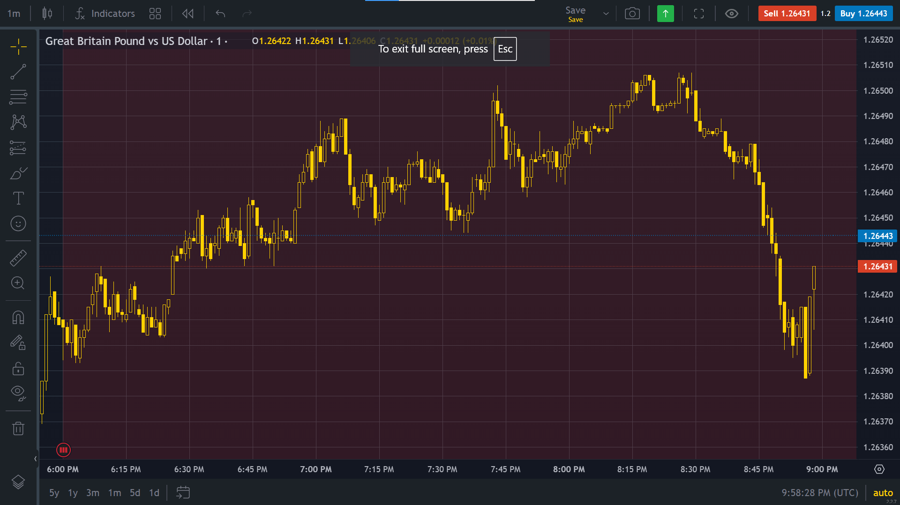

Top 3 Brokers
Choosing the right broker is crucial for successful trading. The following are three of the top brokers in the industry, known for their reliability, features, and customer service.
1. Capital.com
Overview: Capital.com is renowned for its user-friendly platform and comprehensive educational resources, making it an excellent choice for both beginners and experienced traders.
Key Features:
- Intuitive trading platform with advanced charting tools.
- Extensive educational materials including webinars and tutorials.
- Competitive spreads and low commissions.
- Can connect with TradingView.
- You can download the app also
- 24/7 customer support.
Pros: Easy to use, excellent customer service, and a wealth of educational resources.
Cons: Only 2 method of deposit and withdraw (it depends on the country you are registred with)
2. IC markets Global
Overview:IC markets Global is highly regarded for its robust trading platform and wide range of tradable assets, making it a favorite among professional traders.
Key Features:
- Powerful trading platform with advanced analytical tools
- Access to a wide range of markets including forex, stocks, commodities, and cryptocurrencies
- High liquidity and fast execution speeds
Pros: Comprehensive trading tools, wide asset selection, and fast execution.

Cons: Boring website and you have to download the app to get the charts and the others.
3. Exness
Overview: Exness Broker is known for its innovative trading technology and strong regulatory compliance, providing traders with a secure and efficient trading environment.
Key Features:
- State-of-the-art trading platform with automated trading capabilities
- Strong regulatory compliance ensuring a secure trading environment
- Competitive pricing with no hidden fees
- Comprehensive market analysis and research tools 
Pros: Advanced technology, strong security measures, and transparent pricing.
Cons: The platform can be complex for beginners to navigate.
Conclusion
Each of these brokers offers unique advantages depending on your trading needs and experience level. Capital.com is ideal for beginners, IC Market suits professional traders looking for a wide range of assets, and Exness is perfect for those who prioritize security and advanced trading technology. Evaluate these brokers based on your specific requirements to make an informed decision.